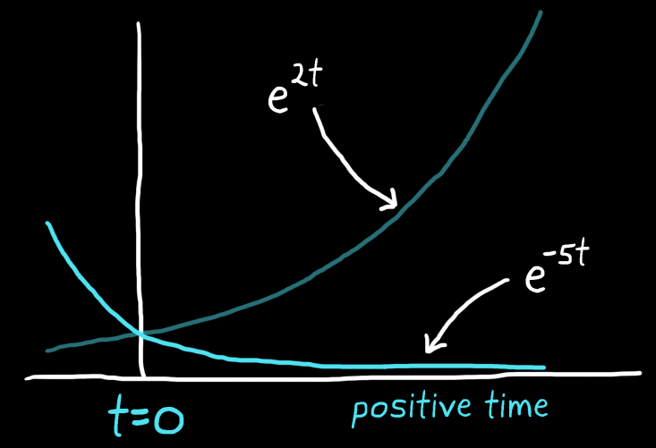
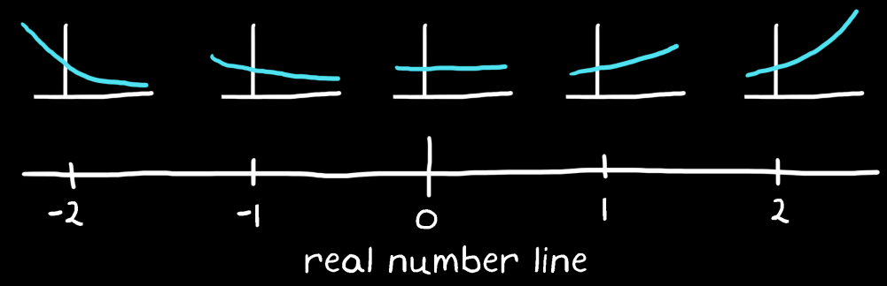

For exponential functions that have real numbers for exponents:
Negative indicates exponentially decaying signals
Positive indicates exponentially growing signals

$$
f(\sigma) = e^{\sigma t}
$$
$\sigma$ represents a real number.

$e^{\sigma t}$ produces exponential functions that change with $\sigma$
As with $\omega$ giving the location of a signal on a frequency line, $\sigma$ gives the location of an exponential function on a real number line. As an exponential signal moves away from the origin, the absolute value of the real number becomes larger and thus the signal decays or grows at a faster rate.
Sign
Consider the function $f(\sigma) = e^{-\sigma}$. It has a range of $(0, \infty)$.
As $\sigma \to \infty$, $e^{-\sigma} \to 0$, but it never actually reaches zero.
As $\sigma \to -\infty$, $e^{-\sigma} \to \infty$.
The range of the natural exponential function $e^{u}$ is $(0, \infty)$.